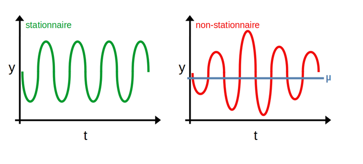

Entraînement de Yolo V7 sur des données personnelles
Entraînement de Yolo V7 sur des données personnelles et sans GPU hardware
Entraînement de Yolo V7 sur des données personnelles et sans GPU hardware
Analyse d'une série temporelle par décomposition et modélisations classiques.

Quelques conseils pour réussir sa transition de SAS vers R
Tour d'horizon des manières de filtrer des observations et sélectionner des colonnes avec pandas
Réalisation et mise en forme d'un graphique en colonnes avec ggplot2.

Petite présentation des OR et des RR, et ce qu'ils veulent dire.

Présentation des enjeux théoriques et pratiques de l'arbitrage biais variance dans la construction d'un modèle de prédiction.

Présentation du gestionnaire de packages de R

Éléments théoriques généraux sur les séries temporelles et quelques exemples classiques. 
Mise à jour de l'évaluation des performances du verbe across dans dplyr version 1.0.6